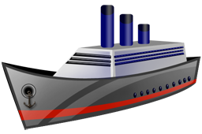

The AIS vessel tracker homepage supplies you with near real time vessel position information
Use this form to search a vessel by name as http "POST"
Use this form to search a vessel by Latitude and Longitude as http "GET"
| Picture | Vessel Name | |
|---|---|---|
|  | Penelope | |
| Position | Latitude | 50° 44' N |
| Longitude | 7° 6' E | |
| Speed | 10 kn | |
| Direction | Rotterdam | |
Real AIS Vessel Tracker System: http://www.vesselfinder.com/